Legends
How can I change the legend title?
Change the label for the aesthetic the legend is drawn for in labs().
See example
By default your legend label will be the name of the variable that is mapped to the aesthetic the legend is drawn for. You can change the title of your legend using labs().
ggplot(mpg, aes(x = hwy, y = cty, color = drv)) +
geom_point() +
labs(color = "Drive train")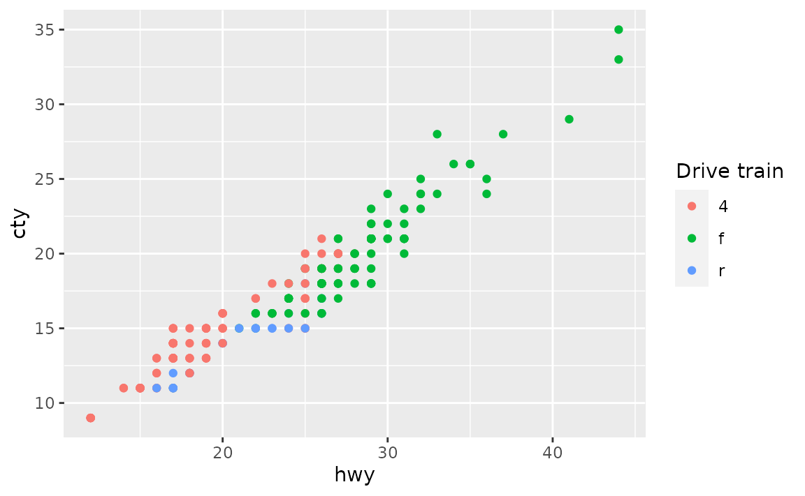
If a legend is drawn for multiple aesthetics, you’ll want to update the title for all of them.
# not this
ggplot(mpg, aes(x = hwy, y = cty, color = drv, shape = drv)) +
geom_point() +
labs(color = "Drive train")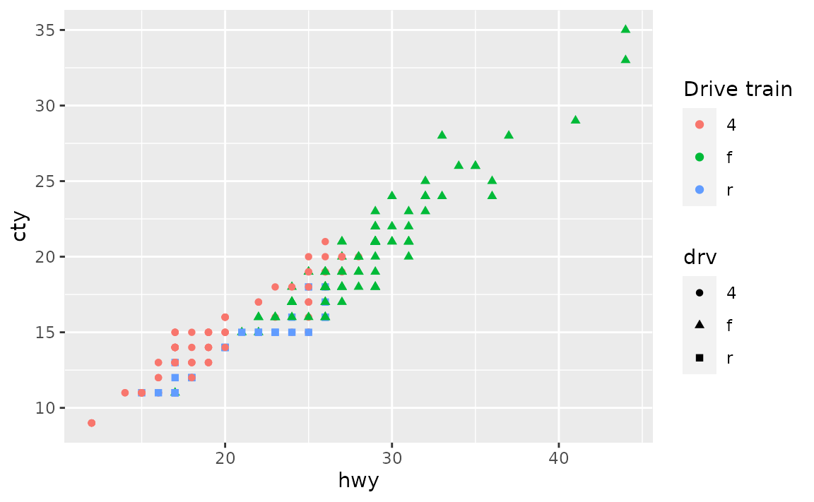
# but this
ggplot(mpg, aes(x = hwy, y = cty, color = drv, shape = drv)) +
geom_point() +
labs(color = "Drive train", shape = "Drive train")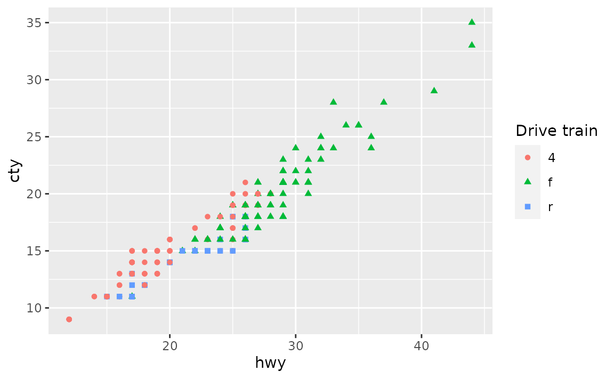
How can I increase the spacing between legend keys?
Increase the horizontal space between legend keys with legend.spacing.x in theme(). This argument takes a unit object created with grid::unit().
See example
If you have a horizontal legend, generally placed on top or bottom of the plot with legend.position = "top" or "bottom", you can change the spacing between legend keys with legend.spacing.x. You can supply a unit object to this argument, e.g. unit(1.0, "cm") for 1 cm space between legend keys. See the documentation for grid::unit() for more options for units.
ggplot(mpg, aes(x = hwy, y = cty, color = drv)) +
geom_point() +
theme(
legend.position = "bottom",
legend.spacing.x = unit(1.0, "cm")
)
For vertical legends changing legend.spacing.y changes the space between the legend title and the keys, but not between the keys, e.g. see the large space between the legend title and keys.
ggplot(mpg, aes(x = hwy, y = cty, color = drv)) +
geom_point() +
theme(legend.spacing.y = unit(3.0, "cm"))
In order to change the space between the legend keys, you can first make the key size bigger with legend.key.size and then remove the grey background color with legend.key.
ggplot(mpg, aes(x = hwy, y = cty, color = drv)) +
geom_point() +
theme(
legend.key.size = unit(1.5, "cm"),
legend.key = element_rect(color = NA, fill = NA)
)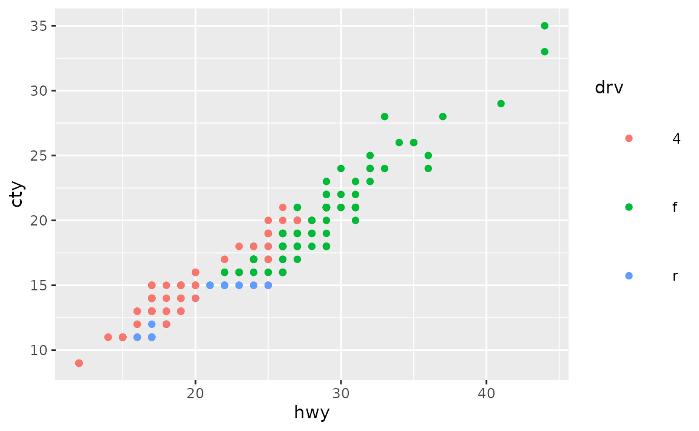
Note that the legend title is no longer aligned with the keys with this approach. You can also shift it over with legend.title.align.
ggplot(mpg, aes(x = hwy, y = cty, color = drv)) +
geom_point() +
theme(
legend.key.size = unit(1.5, "cm"),
legend.key = element_rect(color = NA, fill = NA),
legend.title.align = 0.5
)
How can I change the key labels in the legend?
If you don’t want to change the levels of the variable the legend is being drawn for, you can change the key labels at the time of drawing the plot using the labels argument in the appropriate scale_*() function, e.g. scale_colour_discrete() if the legend is for a discrete variable mapped to the fill aesthetic.
See example
The labels argument of scale_* functions takes named vectors, which what we would recommend using for relabeling keys in a legend. Using named lists allows you to declare explicitly which label is assigned to which level, without having to keep track of level order.
ggplot(mpg, aes(x = hwy, y = cty, color = drv)) +
geom_point() +
scale_color_discrete(
labels = c("4" = "4-wheel drive",
"f" = "Front-wheel drive",
"r" = "Rear-wheel drive")
)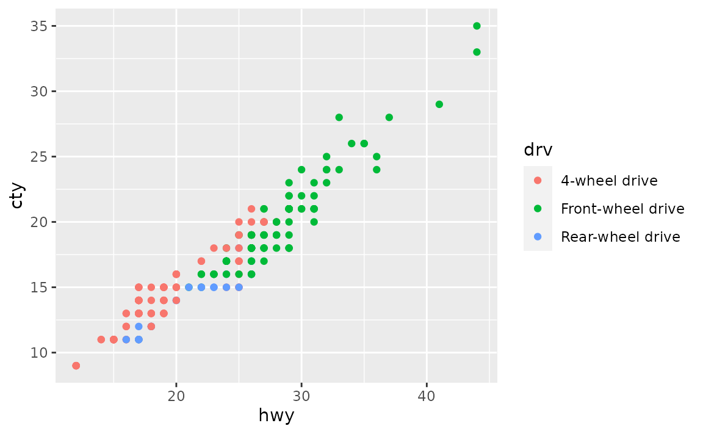
How can I change the font sizes in the legend?
Set your preference in legend.text for key labels and legend.title in theme(). In both cases, set font size in the size argument of element_text(), e.g. legend.text = element_text(size = 14).
See example
Font characteristics of a legend can be controlled with the legend.text and legend.title elements of theme(). You can use the following for 14 pts text for legend key labels and 10 pts text for legend title. (Note that this doesn’t result in a visually pleasing legend, by default ggplot2 uses a larger font size for the legend title than the legend text.)
ggplot(mpg, aes(x = hwy, y = cty, color = class)) +
geom_point() +
theme(
legend.text = element_text(size = 14),
legend.title = element_text(size = 10)
)
For further customization of legend text, see the documentation for element_text(), e.g. you can change font colors or font face as well.
ggplot(mpg, aes(x = hwy, y = cty, color = class)) +
geom_point() +
theme(
legend.text = element_text(size = 14, color = "red"),
legend.title = element_text(size = 10, face = "bold.italic")
)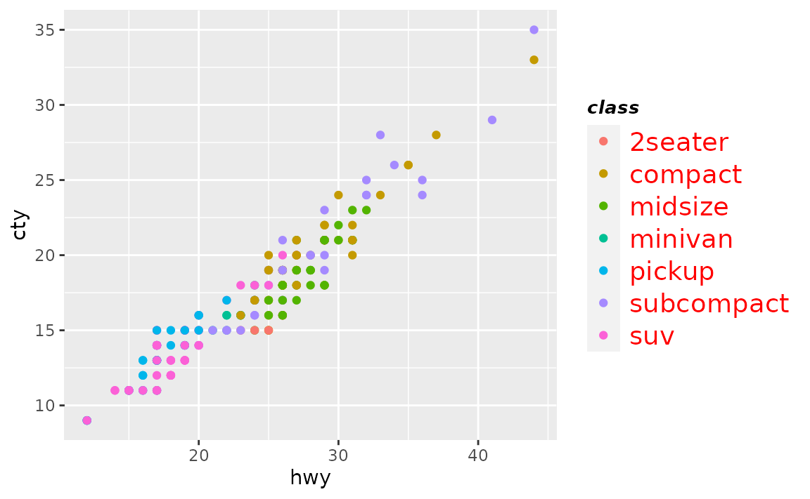
Colours
How can I change the background colour of plot?
Set the color in panel.background element of theme() with element_rect(), which takes arguments like fill (for background fill color) and colour (for background border color.
See example
You can set the background colour of the plot with panel.backgroun in theme(). In the following example the border is made thicker with size = 3 to
ggplot(mpg, aes(x = hwy, y = cty)) +
geom_point() +
theme(panel.background = element_rect(fill = "lightblue", colour = "red", size = 3))
If you want to change the colour of the plotting area but not the panel where the panel, you can so the same thing with plot.background.
ggplot(mpg, aes(x = hwy, y = cty)) +
geom_point() +
theme(plot.background = element_rect(fill = "lightblue", colour = "red", size = 3))
Note that ggplot2 has a variety of complete themes that might already do what you’re hoping to accomplish. For example, if you prefer a more minimal look to your plots, without the grey background, you might try theme_minimal().
ggplot(mpg, aes(x = hwy, y = cty)) +
geom_point() +
theme_minimal()
And you can continue customization based on one of these themes.
ggplot(mpg, aes(x = hwy, y = cty)) +
geom_point() +
theme_minimal() +
theme(plot.background = element_rect(colour = "red", size = 3))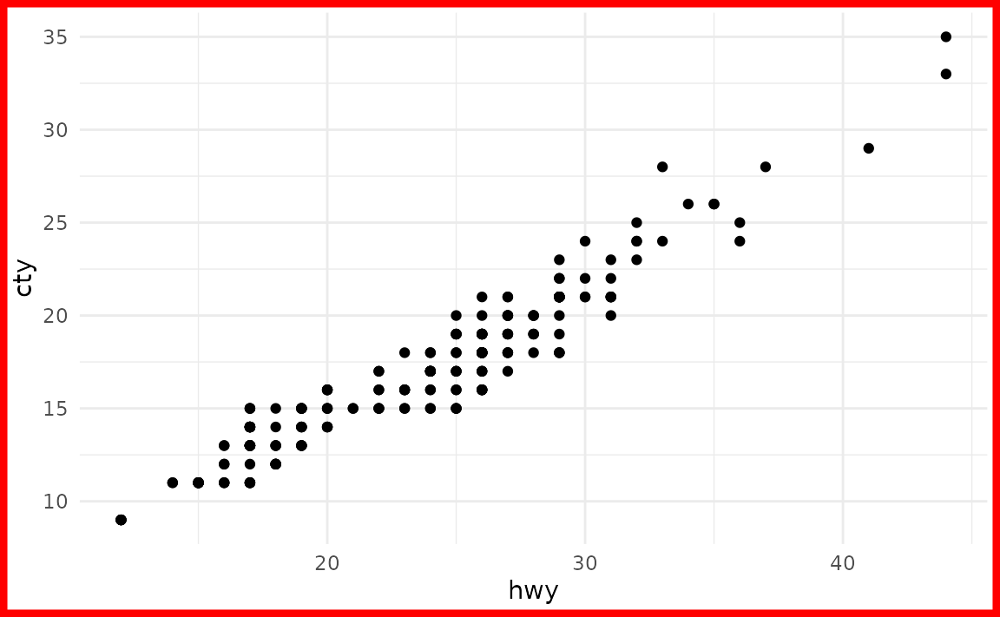
You might also find the thematic package useful for simplified theming of your plots.
How can I change the colour NAs are represented with in a plot?
You can set the color of NA with the na.value argument in the appropriate scale_*() function, e.g. scale_fill_discrete(na.value = "purple") to make NAs purple.
See example
Suppose you have the following data frame with two discrete variables, one of which has an NA.
df <- tibble::tribble(
~group, ~outcome,
1, "yes",
1, "no",
2, "yes",
2, "no",
2, "no",
2, NA
)By default, ggplot2 uses grey to represent NAs.

You can change the color of NA with scale_fill_discrete() in this case, e.g. make it purple.
ggplot(df, aes(x = group, fill = outcome)) +
geom_bar() +
scale_fill_discrete(na.value = "purple")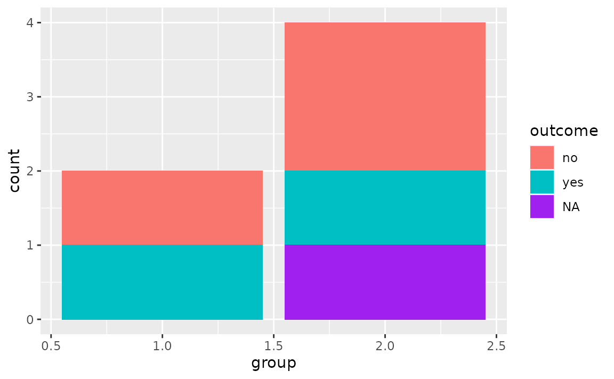
You can also set the color to "transparent". In the plot below this is shown with theme_minimal() to demonstrate how that looks on a plot with a transparent background. Note that while this is possible, setting the colour to transparent as such wouldn’t be recommended in this particular case as it gives the appearance of a floating bar.
ggplot(df, aes(x = group, fill = outcome)) +
geom_bar() +
scale_fill_discrete(na.value = "transparent") +
theme_minimal()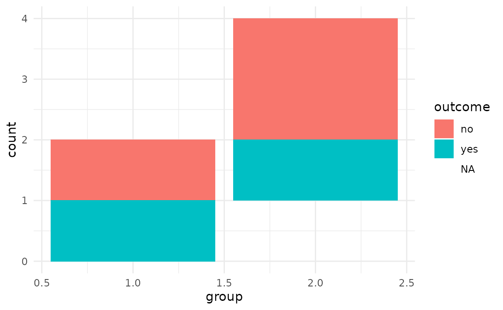
Fonts
How can I change the default font size in ggplot2?
Set base_size in the theme you’re using, which is theme_gray() by default.
See example
The base font size is 11 pts by default. You can change it with the base_size argument in the theme you’re using. See the complete theme documentation for more high level options you can set.
ggplot(mpg, aes(x = hwy, y = cty, color = class)) +
geom_point() +
theme_gray(base_size = 18)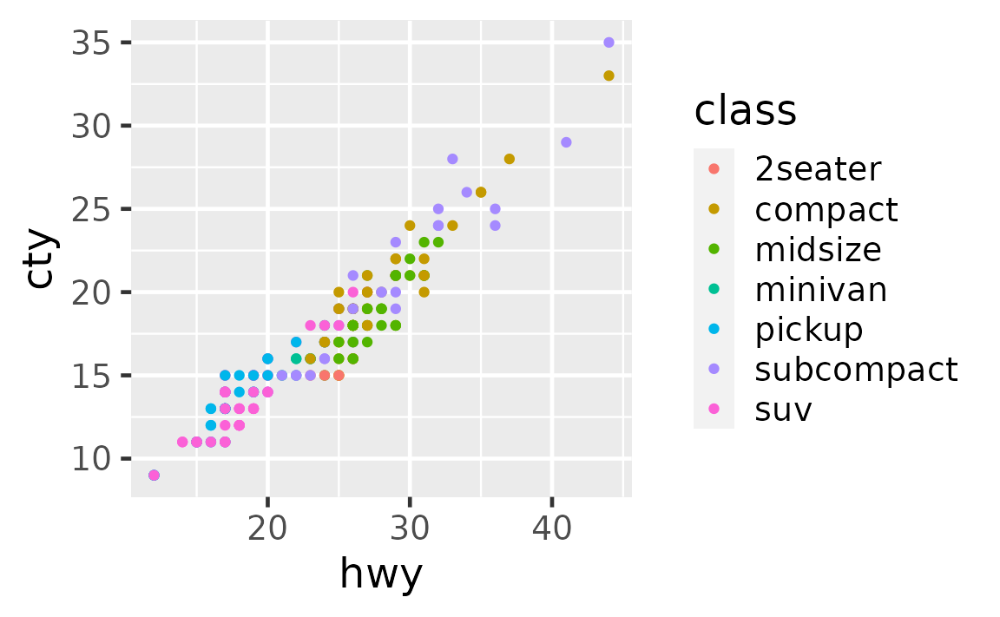
If you would like all plots within a session/document to use a particular base size, you can set it with theme_set(). Run the following at the beginning of your session or include on top of your R Markdown document.
theme_set(theme_gray(base_size = 18))How can I change the font size of the plot title and subtitle?
Set your preference in plot.title and plot.subtitle in theme(). In both cases, set font size in the size argument of element_text(), e.g. plot.title = element_text(size = 20).
See example
Font characteristics of plot titles and subtitles can be controlled with the plot.title and plot.subtitle elements of theme(). You can use the following for 20 pts text for the plot title and 15 pts text for the plot subtitle.
ggplot(mpg, aes(x = hwy, y = cty)) +
geom_point() +
labs(
title = "This is the plot title",
subtitle = "And this is the subtitle"
) +
theme(
plot.title = element_text(size = 20),
plot.subtitle = element_text(size = 15)
)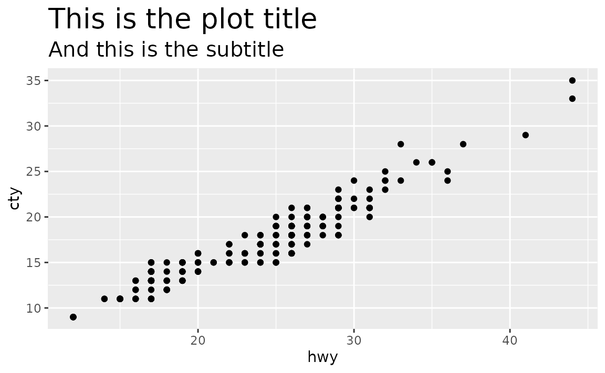
For further customization of plot title and subtitle, see the documentation for element_text(), e.g. you can change font colors or font face as well.
ggplot(mpg, aes(x = hwy, y = cty)) +
geom_point() +
labs(
title = "This is the plot title",
subtitle = "And this is the subtitle"
) +
theme(
plot.title = element_text(size = 20, color = "red"),
plot.subtitle = element_text(size = 15, face = "bold.italic")
)
How can I change the font size of axis labels?
Set your preference in axis.title. axis.title.x, or axis.title.y in theme(). In both cases, set font size in the size argument of element_text(), e.g. axis.text = element_text(size = 14).
See example
Font characteristics of axis labels can be controlled with axis.title.x or axis.title.y (or axis.title if you the same settings for both axes).
ggplot(mpg, aes(x = hwy, y = cty)) +
geom_point() +
labs(
x = "This is HUGE",
y = "This is small"
) +
theme(
axis.title.x = element_text(size = 20),
axis.title.y = element_text(size = 10)
)
For further customization of plot title and subtitle, see the documentation for element_text(), e.g. you can change font colors or font face as well.
ggplot(mpg, aes(x = hwy, y = cty)) +
geom_point() +
labs(
x = "This is HUGE",
y = "This is tiny"
) +
theme(
axis.title.x = element_text(size = 20, color = "red"),
axis.title.y = element_text(size = 10, face = "bold.italic")
)
You can also change the size of the axis text (e.g. numbers at the axis ticks) using axis.text (or axis.text.x and axis.text.y if you want to set different sizes).
ggplot(mpg, aes(x = hwy, y = cty)) +
geom_point() +
labs(
x = "The axis labels are the same size",
y = "The axis labels are the same size"
) +
theme(
axis.title = element_text(size = 16),
axis.text = element_text(size = 20, color = "blue")
)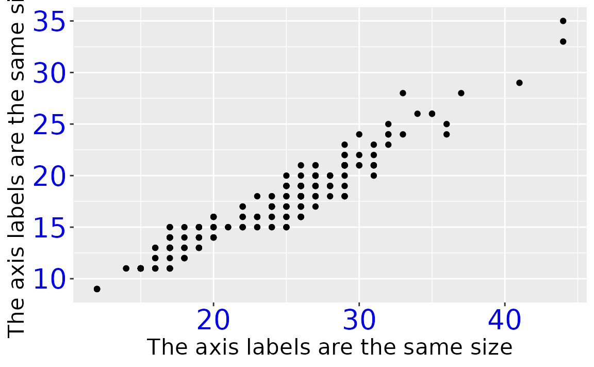
What is the default size of geom_text() and how can I change the font size of geom_text()?
The default font size of geom_text() is 3.88.
GeomLabel$default_aes$size
#> [1] 3.88You can change the size using the size argument in geom_text() for a single plot. If you want to use the same updated size, you can set this with update_geom_defaults(), e.g. update_geom_defaults("text", list(size = 6)).
See example
Suppose you have the following data frame and visualization.
df <- tibble::tribble(
~x, ~y, ~name,
2, 2, "two",
3, 3, "three",
4, 4, "four"
)
ggplot(df, aes(x = x, y = y, label = name)) +
geom_text()
You can set the size of the text with the following.

Or you can map it to the size aesthetic. In the following size is determined by the x value with scale_size_identity().
ggplot(df, aes(x = x, y = y, label = name)) +
geom_text(aes(size = x)) +
scale_size_identity()
If you want to use the same updated size for geom_text() in a series of plots in a session/R Markdown document, you can set use update_geom_defaults() to update the default size, e.g. if you want the size for all geom_text() to be 6, use update_geom_defaults("text", list(size = 6)).